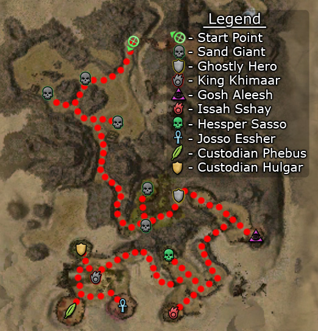

Elite: Warrior's Endurance
M16
Thirsty River
◉ Mission Map

Click to enlarge · Local cache · Wiki
Summary (click to expand)
* Dunes of Despair and Elona Reach must also be completed before Augury Rock.
Region: Crystal Desert · Mission: 16 of 25 · Type: Cooperative
✓ Objectives
Annihilate the opposing enemy teams.
- Defeat Goss Aleessh's team.
- Defeat Issah Sshay's team.
- Defeat Hessper Sasso's team.
- Defeat Josso Essher's team.
- Defeat Lyssha Suss's team.[sic]
- Defeat Kesskah Shissh's team.[sic]
- *BONUS* Cleanse the area before King Khimaar's spirit is driven away.
→ Walkthrough

The rune in Augury Rock that represents Thirsty River.
Before you fight the six teams mentioned in the objectives, there is an opportunity to gain Morale Boosts by killing the five Sand Giants which grant a 2% boost each. These Sand Giants are not mission critical.
The mission has three more sections, each with some Forgotten, a boss and a priest. A timer starts and at every two minutes mark, if the priest of a group is still alive, all defeated foes are resurrected; thus timing is highly important. Focus your firepower on the Priest first but if your party shows difficulty, pull back to prevent being instantly swarmed by the respawned foes. Defeating all foes opens the gate to the next section. Between sections, the timer stops and will reset when the next gate is opened, allowing enough time to regenerate and recharge before tackling the next area. Remember that if the Ghostly Hero dies, the mission is over. If you're unsure whether your healers can keep him alive, leave him behind the gate by talking to him once.
- Talk to the Ghostly Hero and enter the first section which has a single group led by Goss Aleessh. Be wary of the Forgotten's Chaos Storms, as it tends to confuse Hero and Henchmen AI, making them run in-and-out of the effect repeatedly.
- Section two has two groups, one headed by Issah Sshay and the other by Hessper Sasso. Finish off one group at a time. After defeating the first boss, wait until the 2 minute timer mark has passed, then continue. There is little space to fight so instead of rushing ahead, wait by the recently opened gate as both groups have patrols headed towards it. In particular, sticking to the left wall can let one avoid the groups connected to Hesper Sasso entirely, making it easier to kill the Elementalist groups undisturbed.
- The third section has three groups. Custodian Hulgar is to the right, Josso Essher to the left, and Custodian Phebus in between. In this section the right group will attack King Khimaar. Of the six groups, Josso's (Word of Healing) is the most difficult as you will be facing two monks. Only groups from Custodian Hulgar will enter the center as long as no one wanders too close to the other groups.
★ Bonus
The bonus requires keeping King Khimaar alive in the third (and final) area. This is complicated by three factors that can cause you to fail the bonus: first, as soon as you enter the area, Custodian Hulgar's group will start attacking him. If he survives, he is also at risk from other foes in the area, especially if you draw them away from their original locations. Finally, if you take more than ten minutes to clear the area, the king will leave (usually at least one 2 minute cycle is needed per group, leaving only two possible extra cycles).
Accordingly, immediately send your party to protect the king (e.g. by flagging heroes and henchmen) and clear the central area of all foes before going after any of the other groups. Be prepared to return to protect the king if any foes respawn and head in his direction.
◆ Hard Mode
Besides increasing the level of all foes, Hard mode also adds a few skills to all non-boss enemies. In the Sand Giant section the Devourers will add effective area damage through Barrage while the Sand Giants become a bit more tanky through Vampiric Touch.
For the Forgotten section, the Mesmers gain Power Drain to interrupt while the Necromancers can remove enchantments due to Strip Enchantment. For the Bonus, it becomes much more important to avoid drawing foes to Khimaar and to protect him quickly. Not only can they kill him much quicker, but their increased movement speed means that one of the patrols from either the Ranger boss or the Monk boss area will very likely encounter the backline of the party if they haven't moved forwards.
☠ Bosses & Elites
Elite: Marksman's Wager
Elite: Word of Healing
Elite: Order of the Vampire
Elite: Mantra of Recovery
Elite: Ether Renewal
✦ Tips & Notes
Skill recommendations
- Area of effect skills as all sections are tight.
- Anti-caster skills, such as Scourge Healing, Backfire, and Broad Head Arrow.
- Technobabble can prove useful to daze both the Priest and the boss at once (if used properly).
- A minion master helps corpse control as enemies use Consume Corpse to heal themselves and dodge players attacks.
- Blind skills to use against warriors and rangers but not versus Sand Giants as they use Plague Touch.
- Spike Builds can be especially good to quickly kill Enemy Priest such as Star Burst, Mind Blast, Lightning Surge Nuker, Moebius Strike, Way of the Assassin Dagger Spam, Strike as One Packmaster
Notes
- The groups led by the different bosses are hostile toward each other, and it is possible to have two enemy teams engage in combat if pulled correctly.
- Lyssha Suss and Kesskah Shissh are not present in the mission. Their teams are actually headed by Custodian Phebus and Custodian Hulgar, respectively.
- Consistent with the rest of the game, respawning enemies do not yield any experience or drops. However, they do leave exploitable corpses.
- Completion of this mission will fill in page #9 of The Flameseeker Prophecies storybook.
Cartography
- Complete exploration during this mission contributes approximately 0.7% to the Tyrian Cartographer title.
Farming
- This mission can be used for levelling up your character or your heroes. A Scroll of Hunter's Insight will increase the experience gained as you will be killing bosses on a regular basis.